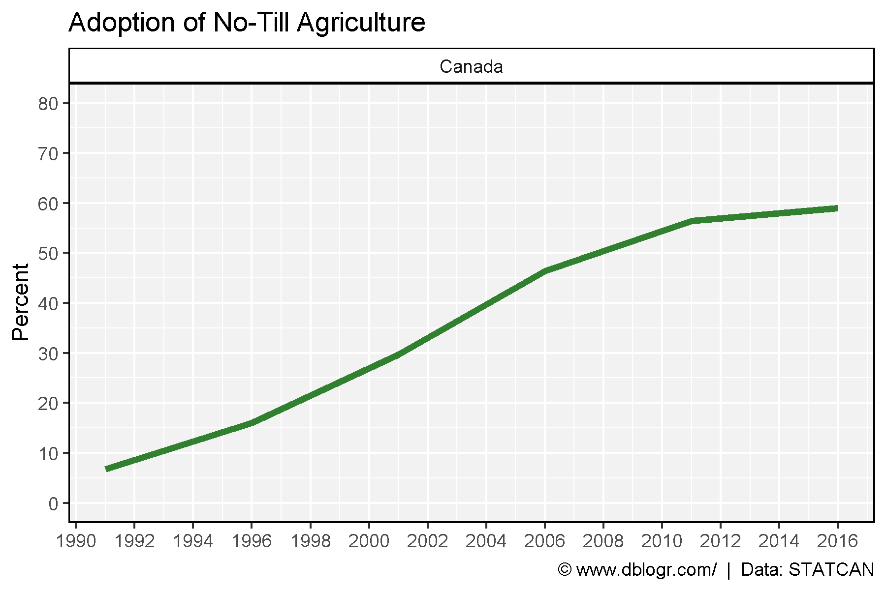
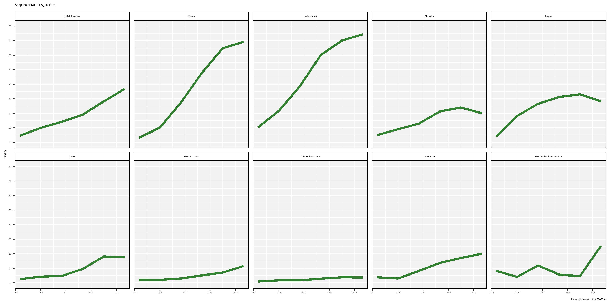
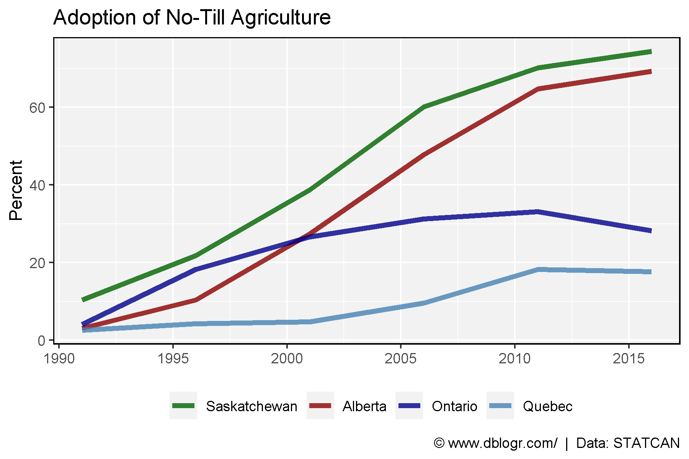

Percent
Canada
# Prep data
xx <- agData_STATCAN_FarmLand_NoTill %>%
filter(Area == "Canada", Unit == "Hectares") %>%
spread(Item, Value) %>%
mutate(Percent = 100* `No-till seeding or zero-till seeding` / `Total land prepared for seeding`)
# Plot
mp <- ggplot(xx, aes(x = Year, y = Percent)) +
geom_line(color = "darkgreen", size = 1.5, alpha = 0.8) +
facet_grid(. ~ Area) +
scale_fill_manual(values = agData_Colors) +
scale_x_continuous(breaks = seq(1990, 2016, 2)) +
scale_y_continuous(breaks = seq(0, 80, 10), limits = c(0, 80)) +
theme_agData() +
labs(title = "Adoption of No-Till Agriculture", x = NULL,
caption = "\xa9 www.dblogr.com/ | Data: STATCAN")
ggsave("no_till_04.png", mp, width = 6, height = 4)
Saskatchewan
# Prep data
xx <- agData_STATCAN_FarmLand_NoTill %>%
filter(Area == "Saskatchewan", Unit == "Hectares") %>%
spread(Item, Value) %>%
mutate(Percent = 100* `No-till seeding or zero-till seeding` / `Total land prepared for seeding`)
# Plot
mp <- ggplot(xx, aes(x = Year, y = Percent)) +
geom_line(color = "darkgreen", size = 1.5, alpha = 0.8) +
facet_grid(. ~ Area) +
scale_fill_manual(values = agData_Colors) +
scale_x_continuous(breaks = seq(1990, 2016, 2)) +
scale_y_continuous(breaks = seq(0, 80, 10), limits = c(0, 80)) +
theme_agData() +
labs(title = "Adoption of No-Till Agriculture", x = NULL,
caption = "\xa9 www.dblogr.com/ | Data: STATCAN")
ggsave("no_till_05.png", mp, width = 6, height = 4)
Provinces
# Prep data
xx <- agData_STATCAN_FarmLand_NoTill %>%
filter(Area != "Canada", Unit == "Hectares") %>%
spread(Item, Value) %>%
mutate(Percent = 100* `No-till seeding or zero-till seeding` / `Total land prepared for seeding`)
# Plot
mp <- ggplot(xx, aes(x = Year, y = Percent)) +
geom_line(color = "darkgreen", size = 1.5, alpha = 0.8) +
facet_wrap(Area ~ ., ncol = 5) +
scale_fill_manual(values = agData_Colors) +
scale_x_continuous(breaks = seq(1990, 2016, 6)) +
scale_y_continuous(breaks = seq(0, 80, 10), limits = c(0, 80)) +
theme_agData() +
labs(title = "Adoption of No-Till Agriculture", x = NULL,
caption = "\xa9 www.dblogr.com/ | Data: STATCAN")
ggsave("no_till_06.png", mp, width = 12, height = 6)
East vs West
# Prep data
areas <- c("Saskatchewan", "Alberta", "Ontario", "Quebec")
colors <- c("darkgreen", "darkred", "darkblue", "steelblue")
xx <- xx %>%
filter(Area %in% areas) %>%
mutate(Area = factor(Area, levels = areas))
# Plot
mp <- ggplot(xx, aes(x = Year, y = Percent, color = Area)) +
geom_line(size = 1.5, alpha = 0.8) +
scale_color_manual(name = NULL, values = colors) +
scale_x_continuous(breaks = seq(1990, 2016, 5)) +
theme_agData(legend.position = "bottom") +
labs(title = "Adoption of No-Till Agriculture", x = NULL,
caption = "\xa9 www.dblogr.com/ | Data: STATCAN")
ggsave("no_till_07.png", mp, width = 6, height = 4)